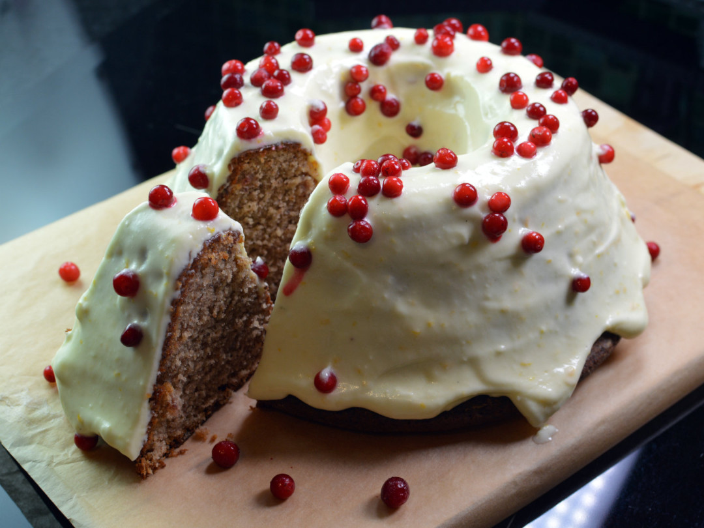

Lingonberry Gingerbread Cake
Lingonberry Gingerbread Cake

A Swedish Holiday Tradition
Swedish soft gingerbread cake is traditionally served around Christmas time in Sweden.
This spiced, berry-studded cake also makes a great breakfast stand-in for coffee cake or gingerbread.
It can be served as is, or cubed and layered with custard or a sour-cream based glaze.
Ingredients
- 2 2/3 (75g) butter
- 2 eggs
- 3/4 cup (200 mL) superfine sugar
- 2/3 cup (150 mL) sour cream
- 1 1/4 cup (3 dl) all-purpose flour
- 1 1/2 tsp baking soda
- 1/2 tsp ground cinnamon
- 1/2 tsp ground ginger
- 1 tsp ground cloves
- 1 oz (30g) chopped pickled orange peel
- 1/3 cup (100 mL) lingonberry jam (not too loose)
Steps
- Grease a 6 cup (1 1/2 liter) cake pan or line it with parchment paper.
Pre-heat the oven to 350 F (175 C).
- Melt the butter and let cool.
- Beat the eggs and sugar until light and fluffy. Add the sour cream.
- Mix the flour, baking soda, spices, and orange peel, and add this
to the batter.
- Add the lingonberry jam and finally the cooled butter.
Pour the batter into the pan.
- Bake in the oven for 45-55 minutes. Turn the cake out onto a cooling
rack and let cool under a baking cloth.